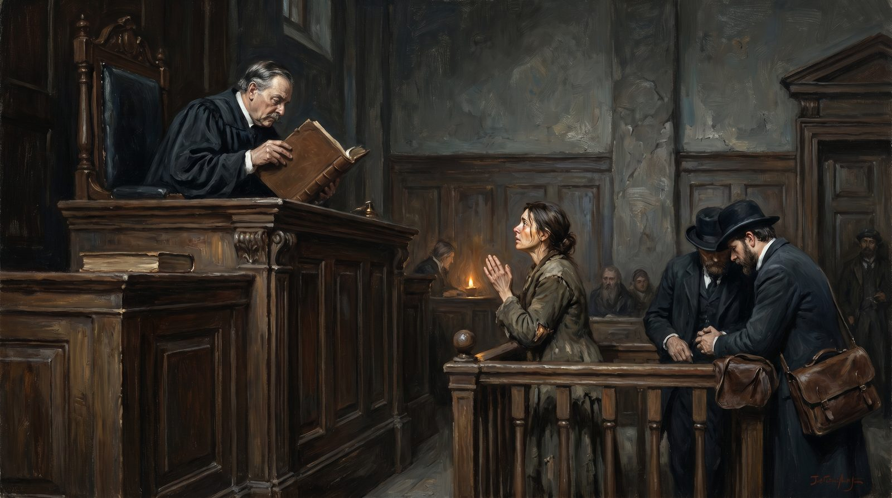

Судья без компаса
Правосудие по параграфам вместо людей
Практика · 13 мин чтения

Женщина просит судью выселить бывшего мужа из её дома. Она показывает, что он неоднократно угрожал ей. У неё есть сообщения, фотографии, показания соседей. Она потратила год, чтобы набраться мужества и прийти в суд. Судья смотрит на документы. Он устанавливает, что рассматривается дело в порядке упрощённого производства, что дом оформлен на имя мужа, что у неё нет права собственности и что запрошенная временная мера не вписывается в правовое основание, как оно сформулировано в исковом заявлении. Он отказывает в требовании. Технически решение верно. Женщина возвращается домой — к мужу, который ей угрожает.
Это не краевой случай. Так работает правосудие, когда оно съехало от людей к параграфам.
Чем было правосудие
Отправление правосудия — это издревле произнесение суждения о том, что в действительности произошло, кто несёт ответственность и что должно измениться. Это нравственный акт, а не технический. Он требует человека, который взвешивает факты, смотрит на людей, понимает контекст и делает вывод, воздающий должное тому, что произошло в мире.
В ранних правовых системах судья был старейшиной, мудрецом, авторитетом, черпавшим свой авторитет из способности видеть то, что есть на самом деле. Он не был технарём. Он был судящим. У него не было пятитысячестраничного кодекса — у него было его суждение, его репутация, его община, которая поправляла его, когда он сильно отступал от истины.
У той системы были недостатки. Она была непоследовательна. Она была уязвима для предрассудков и произвола. Она порой бывала несправедлива к тем, у кого не было доступа к мудрецу. Эти возражения реальны.
Но у системы было и то, чего нет у нынешней: она могла видеть то, что есть. Она могла реагировать на реальность, а не на формулировку реальности.
Континентальное право и выключение суждения
Нидерланды работают по системе континентального права — французское наследие, наполеоновские кодексы, кодификация всего в письменном законодательстве. В этой системе закон — всегда отправная точка. Судья применяет закон. Он интерпретирует закон. Он рассуждает от закона к делу. Его собственное суждение — что он чувствует, что он думает, что говорит ему здравый смысл — в этой системе является фактором риска, а не инструментом.
Англосаксонская система — общее право, используемое в Великобритании и США, — работает иначе. Там есть жюри из рядовых граждан, судящих о фактах. Там есть действие прецедента: то, что реально было решено в конкретных делах, формирует право, а не только то, что написано в абстрактном законодательстве. У этой системы тоже есть недостатки, и романтизировать её никому не поможет. Но в ней структурно больше встроено пространства для суждения, потому что изначально она построена на вопросе: что думают двенадцать рядовых граждан о том, что произошло и кто несёт ответственность?
Континентальная система построена на другом вопросе: какой закон применим, и каков этот закон? Если факты не соответствуют закону — проблема не в законе, а в формулировке требования. Это принципиально иное отношение к реальности.
Я не говорю, что общее право является спасением. Я говорю, что система, рассматривающая суждение как центральный инструмент, не может уйти так далеко от реальности, как система, рассматривающая закон как центральный инструмент. Потому что реальность поправляет суждения — плохое суждение не принимается общиной. Закон сам себя не поправляет. Он стоит там, даже когда устарел.
Нагромождение процессуальных требований как самоцель
Кто начинает судебный процесс как рядовой гражданин — вступает в альпинистский подъём через формальности. Есть повестка, отвечающая формальным требованиям. Есть сроки, строго соблюдаемые. Есть требования к предмету иска — конкретному требованию — которое должно быть юридически точно сформулировано. Есть правила о том, что является доказательством, а что нет, о том, какие документы могут быть представлены, когда это должно быть сделано, как должны быть составлены процессуальные документы.
Всё это не злой умысел суда. Это система, выстроенная за десятилетия для гарантии справедливости. Обе стороны должны иметь равные шансы. Сюрпризы на заседании не допускаются. То, что написано в материалах дела — есть; чего там нет — для судьи не существует.
Результат — система, в которой реальность переводится в процедуру, и в этом переводе существенное может быть потеряно. Арендатор, которому грозит выселение, всегда плативший аренду, но применивший неверную процедуру при подаче возражений, может проиграть дело по основанию, не имеющему отношения к фактической ситуации. Кредитор, очевидно правый, чей судебный исполнитель совершил процессуальную ошибку, оказывается за дверью.
И вот что ошеломительно: судья порой сам знает, что результат горек. Он не слеп. Он не глуп. Но система запрещает ему сказать: это процессуально неправильно, но по существу здесь что-то не так, и я это исправлю. Нельзя. Он связан. Его суждение допустимо лишь в пределах, которые ему даёт кодекс.
Верховный суд как хранитель процедуры
Верховный суд — высшая судебная инстанция Нидерландов. Он не проверяет факты — это в принципе уже решено в нижестоящих инстанциях. Он проверяет право: правильно ли применён закон, соблюдены ли процессуальные правила, корректна ли юридическая аргументация.
Это звучит как осмысленная работа. В системе, где единство права и правовая определённость являются ценностями, это осмысленная работа. Проблема возникает, когда Верховный суд становится хранителем процедуры выше содержания — когда очевидно несправедливый результат остаётся в силе, потому что юридическая аргументация, ведущая к нему, технически верна.
Есть решения Верховного суда, юридически безупречные и содержательно ошеломительные. Дела, в которых компания несёт ответственность за причинённый ею ущерб, но не является обязанной, потому что доктрина ответственности в нидерландском праве требует технического элемента, которого нет. Дела, в которых человек не может получить своё право, потому что избрал не тот тип правового средства. Дела, в которых исковая давность блокирует содержательную дискуссию — даже если исковая давность является следствием недостатка средств на более раннее разбирательство.
Верховный суд имеет право читать закон так, как он написан. Но если он делает это так, что это систематически приводит к исходам, нарушающим чувство справедливости рядовых людей, — то у правовой системы есть проблема, которую не решит более точная судебная практика.
Право для тех, кто может за него заплатить
В юридическом мире есть открытый секрет, о котором редко говорят вслух: качество вашей юридической помощи определяет ваши шансы в зале суда — гораздо больше, чем сила вашего дела.
Вести процесс в Нидерландах стоит денег. Больших денег. Адвокат в гражданском деле — от ста пятидесяти до пятисот евро в час. Простой процесс стоит десять тысяч евро. Более сложное дело — десятки или сотни тысяч. Тот, у кого есть прибавка к оплате — субсидированная юридическая помощь для малообеспеченных — получает адвоката, которому за каждое дело выплачивается фиксированная сумма, независимо от сложности, независимо от затраченного времени. Эта сумма недостаточна. Все это знают.
Следствие: крупные дела выигрывают те, у кого лучше адвокаты. Не только потому что лучшие адвокаты умнее — они иногда умнее, иногда нет. А потому что само ведение процесса — ремесло. Знать процессуальные правила, владеть формулировками, управлять сроками процессуальных действий, своевременно вводить дополнительные доказательства, правильно формулировать апелляционные доводы в высшей инстанции — всё это техническая работа, которая лучше получается, когда ты много её делаешь для клиентов, способных за это заплатить.
Транснациональная компания, имеющая спор с мелким поставщиком, это знает. Она знает, что поставщик не сможет тянуть юридическую помощь годами. Она знает, что мировое соглашение с убытками для малой стороны лучше, чем тяжба до Верховного суда — ведь на это у малой стороны нет средств. Она знает, что юридические процедуры иногда применяются не для того, чтобы выиграть дело, а для того, чтобы финансово измотать противника.
Это не теория заговора. Это описание рациональной стратегии, которую каждый опытный юрист знает.
Юридическая каста и её интерес в сложности
В Нидерландах существует класс людей, обязанных своим существованием сложности правовой системы. Адвокаты, нотариусы, прокуроры, медиаторы, юридические советники, судебные эксперты, офицеры по комплаенсу, юридические политические советники. Люди, чей доход напрямую связан с трудностью системы, которой они служат.
Это не обязательно злой умысел. Адвокат, искренне верящий в важность правовой защиты, может одновременно структурно выигрывать от системы, настолько сложной, что без него через неё не пройти. Эти два обстоятельства не исключают друг друга.
Но это означает, что юридическая каста как профессиональная группа не имеет никакого интереса в упрощении права. Каждое упрощение — каждая сократившаяся процедура, каждое упростившееся правило, каждый спор, который можно решить без адвоката — для кого-то в касте потеря работы. Совокупный интерес касты — в большем числе законов, а не меньшем. В большем числе процедур, а не меньшем. В большей сложности, а не меньшей.
И каста участвует в написании законов. Адвокаты сидят в комиссиях, разрабатывающих законодательство. Юристы пишут пояснительные записки. Судьи дают консультации по развитию права. Люди, больше всего выигрывающие от сложности, имеют и наибольшее влияние на степень сложности. Это не нелегитимно — ни у кого другого нет такой компетенции. Но это структура, самоподдерживающаяся, систематически толкающая в направлении большей сложности и редко имеющая голос, говорящий: давайте это упростим.
Что происходит с доверием к правовому государству
Когда люди чувствуют, что закон — для богатых, это не наивность и не популизм. Это наблюдение, которое верно. Не полностью, не всегда, не везде — но достаточно, чтобы это чувство было обоснованным.
И это чувство делает кое-что с обществом. Люди, не верящие, что могут получить своё право, начинают избегать права. Решают конфликты сами. Предпочитают заплатить, а не судиться, — даже если они правы. Смиряются с несправедливостью, которую могли бы оспорить, потому что знают: оспорить стоит десятков тысяч евро и лет жизни.
Это недоверие — не только чувство. Оно имеет поведенческие последствия. Оно ведёт к недоиспользованию правовой защиты теми, кому она нужна больше всего, и к переиспользованию теми, кто знает процедуры и имеет средства их применять.
Оно ведёт и к чему-то ещё: к людям, больше не воспринимающим правовое государство как свою систему. Видящим закон как нечто, действующее для других, а не для них. Сами начинающим рассуждать вне системы, потому что система подвела их по процессуальному основанию, тогда как их содержательная правота была очевидна всем в зале — включая судью, вынесшего решение.
Правовое государство живёт убеждённостью в том, что закон действует для всех и что каждый может получить своё право. Если эта убеждённость разрушается — не от внешних атак, а самой системой, систематически производящей исходы, нарушающие чувство справедливости, — это угроза правопорядку, которую не сравнить ни с каким террористическим нападением или беспорядками. Это тихая эрозия, которая не ломает за один раз, а медленно выжимает то, что держит общество вместе.
На что должен отваживаться судья
Судья, сидящий напротив женщины, желающей покинуть свой дом, — тоже знает, что происходит. Он тоже человек. У него тоже есть первичное чутьё. Оно говорит ему: здесь что-то не так, здесь человек в опасности, здесь формальный исход — не справедливый.
Но его образование научило его не доверять первичному чутью. Его суждение должно быть выводимым. Его аргументация — юридически прослеживаемой. Его решение — выдержать проверку в апелляции. Если он действует по чувству, и это оспоримо, — его решение несостоятельно. Значит, он не хороший судья.
Так он усвоил, что хорошее судейство совпадает с юридически правильным судейством — даже когда оно не совпадает со справедливым.
Вот суть катастрофы. Не то, что судьи плохие люди. Не то, что они намеренно злоупотребляют правом. Но то, что система воспитала их относиться к собственному суждению как к проблеме, а к процедуре — как к решению. И теперь они заперты в системе, которая препятствует справедливым исходам именно теми инструментами, которые были призваны их гарантировать.
Это выпуск 4, статья 7. Она опирается на серию о законе бумажной индустрии (выпуск 4, статья 1) и о надзорном органе, который ничего не видит (выпуск 4, статья 6). Серия выходит на openvizier.org.